Faye Teras
AD 228 Section 3 Prof. Felicia Berrett 10/03/2024
Develop a consistent and unique visual language through the creation of icons.
Create a mood board that reflects the visual style and inspiration behind your icons.
Design an app landing page that demonstrates how icons can be applied in a real-world user interface.
Produce physical artifacts to showcase visual system in a tangible format
Design 5 cohesive icons in Adobe Illustrator using vec- tor tools, ensuring they communicate clearly and share traits like color, line weight, shape language, and style.
Create a digital mood board in Illustrator, showcasing color schemes, typography, shapes, and design influ- ences.
Design a landing page mockup in Illustrator, integrating your icons to demonstrate their function in a user inter- face.
Transform your icons into button pin designs in Illustra- tor, simplifying them for clarity while keeping their style and recognizability.
Design a display card in Illustrator for your button pins, incorporating branding elements like your project title and visually connecting to your icon system.
For this project, I created a cohesive visual system around five distinct dance styles: Ballet, hip hop, tap, jazz, and character dance. Each of these styles carries extremely different connotations in terms of style, col- or, and energy, making it a challenging theme to work with. My goal was to maintain a consistent visual lan- guage across the icons while allowing each style to re- main differentiated and true to its unique characteris- tics.
The biggest challenge was striking the right bal- ance between consistency and variation. To achieve this, I used a neutral color palette and consistent line weight across all icons, which provided a solid foun- dation for cohesion. At the same time, I paid careful attention to the details in each shoe’s design to reflect the individuality of each dance form.
I also went through many initial sketches to refine the composition and ensure that the icons worked well together as a system. This process helped me experi- ment with different ideas and find the best way to com- municate each dance style while maintaining the integ- rity of the overall visual identity.
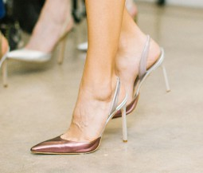
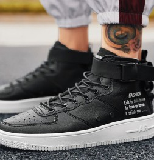
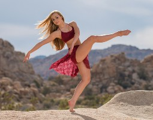
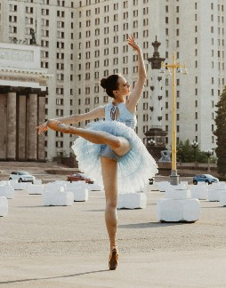
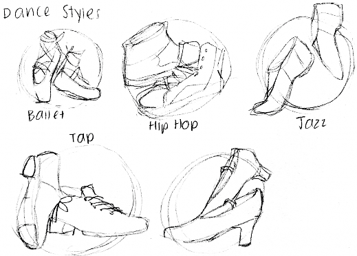
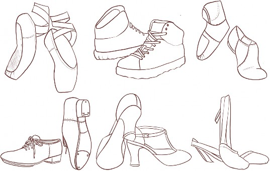
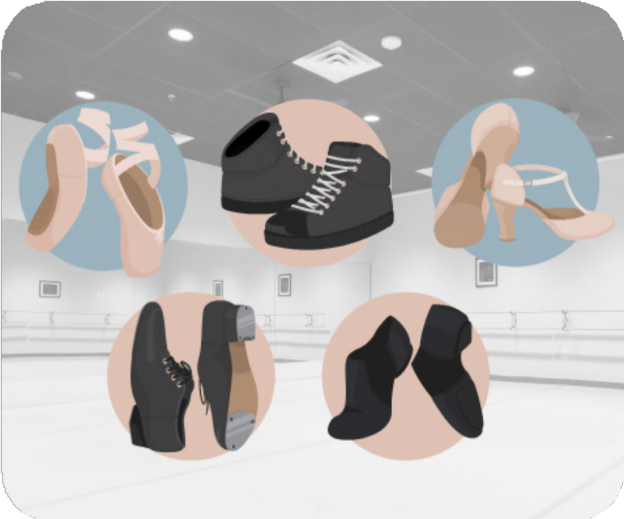
This icon set represents ballet, hip hop, tap, jazz, and char- acter dance through stylized shoe illustrations. A neutral color palette and consistent line weight unify the icons, while each design highlights the unique qualities of its re- spective dance style. The result is a cohesive visual system that balances consistency with differentiation.
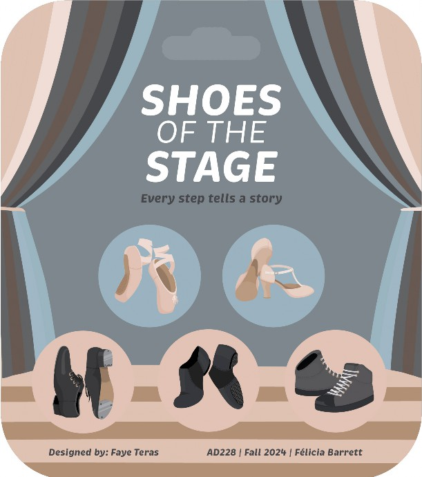
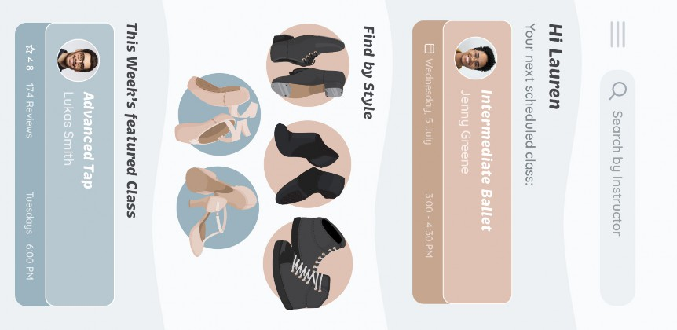
Home Calendar Explo e Q Search by Instructor
Explore
Styles
Upcoming Classes
July 202'-+
-
-
-I
_,
-
- -
- --I
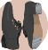
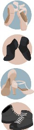
3 00 - 4 30 PM
Wednesday, 5 July
[J
El
Thursday, 7 July
2·00 - 3 00 PM
VIEW MORE>
,_,_:
+
Featured Classes
i
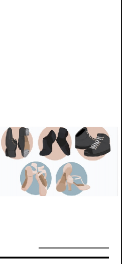
Q Search by Instructor
HI Lauren
Yournextscheduledcloss
Find b}! Style
This Weeh's featured Class
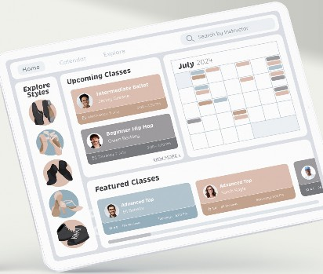
* 4 8 174 Reviews Tuesdays 6 00 PM
* 4 4 89 Reviews Saturdays 1 00 PM
This project allowed me to explore the complex- ities of creating a cohesive yet varied visual system, pushing me to find the balance between individual ex- pression and unified design. As I reflected on the final result, I found that the consistency in line weight and the neutral color palette successfully tied the icons to- gether, while the detailed differences in each shoe ef- fectively conveyed the unique essence of each dance style.
The process of sketching and refining was instru- mental in shaping the final design. It taught me the im- portance of iteration in finding solutions that maintain clarity and harmony across multiple elements. Each icon ultimately captured the essence of its respective dance style, and I’m pleased with how the system came together as a cohesive whole, despite the distinct dif- ferences in the styles. This project has deepened my understanding of how to create visual cohesion in the midst of stylistic diversity, a skill I will carry forward in \ future work.